Talk instead of type.
Hold Right Option wherever you can type, say it, and let go.
- In every appemail, chat, documents, the browser
- Free and privateruns on your computer
- Optional AIremoves the “um”s, rewrites, answers and reads back
How should Splashdown work?
You can change this anytime in Settings → AI Models.
Two quick permissions
Each one ticks itself off as soon as you allow it.
1
Accessibility
Lets Splashdown notice when you hold Right Option, and type into the app you're in.
In System Settings, switch on Splashdown.
2
Microphone
Only used while you hold Right Option.
Switch on Splashdown under Microphone in System Settings.
Try it
Getting Splashdown ready
This computer is slow for the built-in model
Use a cloud service Recommended
With an OpenRouter key, the AI's cleanup takes about a second, for a few cents a day even with heavy use. Your voice is still understood on this computer. Get a key at openrouter.ai/keys, then paste it here.
Your words are typed as you say them, at once, with the “um”s left in.
Want Splashdown to do things for you, not just type?
Say “open Spotify”, “remind me at 5 to stretch”, “add dentist to my calendar on Thursday at 4” or “pause the music”, and it's done.
You're ready
- Right OptionHold it in any app to talk instead of type.
- Splashdown is in the menu bar, at the top of your screen.
Want Splashdown to do things for you, not just type?
“Open Spotify”, “remind me at 5 to stretch”, “pause the music”.